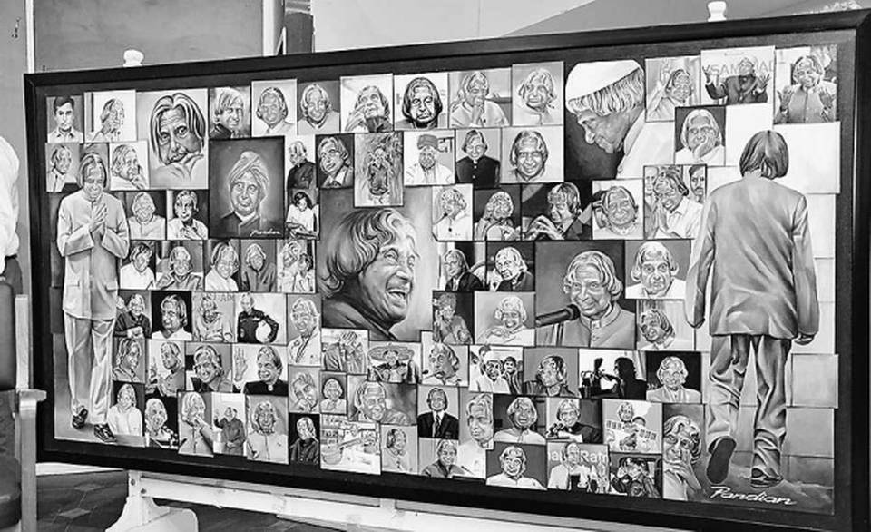

Portraits of former President A.P.J. Abdul Kalam in 84 different
postures.
Here is a timeline of APJ Abdul Kalam's life:
1931 - born to a Tamil Muslim family in the
pilgrimage centre of Rameswaram on Pamban Island, then in the Madras
Presidency and now in the State of Tamil Nadu.
1954 - graduated in physics from Saint Joseph's
College, Tiruchirappalli, then affiliated with the University of
Madras.
1955 - moved to Madras to study aerospace engineering
in Madras Institute of Technology.
1960 - joined the Aeronautical Development
Establishment of the Defence Research and Development Organisation as
a scientist after becoming a member of the Defence Research &
Development Service (DRDS).
1969 - transferred to the Indian Space Research
Organisation (ISRO).
1980 - project director of India's first Satellite
Launch Vehicle (SLV-III) which successfully deployed the Rohini
satellite in near-earth orbit.
1997- recieved the Bharat Ratna, India's Highest
Civilian Award.
1998 - along with cardiologist Soma Raju, Kalam
developed a low cost coronary stent, named the "Kalam-Raju Stent".
2002 - served as the 11th President of India,
succeeding K. R. Narayanan.
2012 - the duo designed a rugged tablet computer for
health care in rural areas, which was named the "Kalam-Raju Tablet".
2015 - died at the age of 83.
"Where there is righteousness in the heart, there is harmony in the house; when there is harmony in the house,
there is
order in the nation; when there is order in the nation, there is peace in the world."